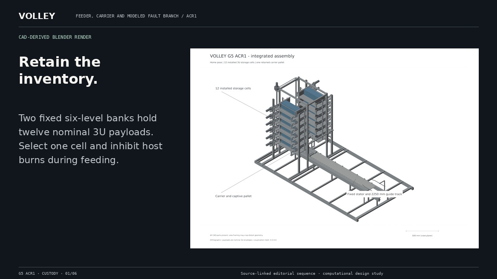
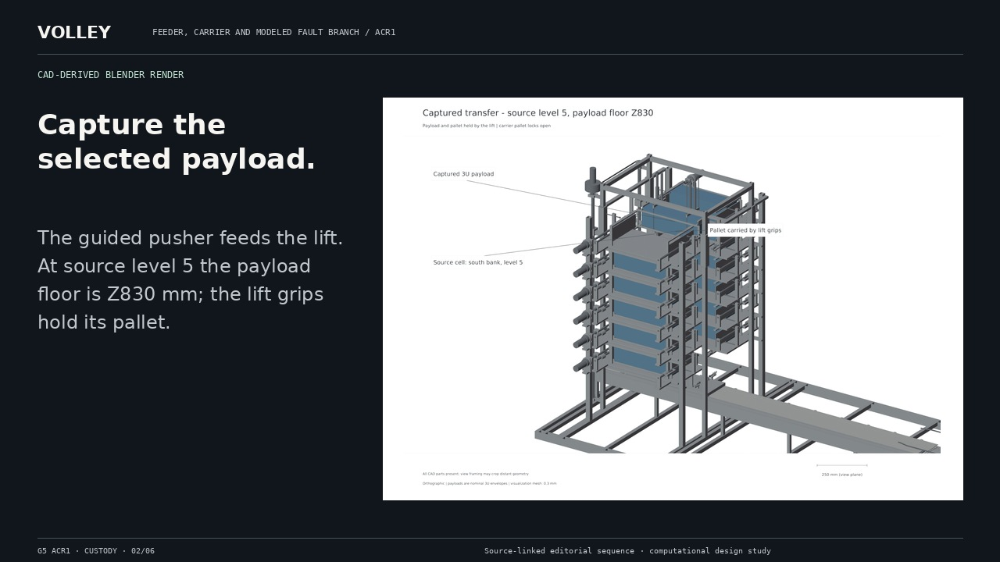
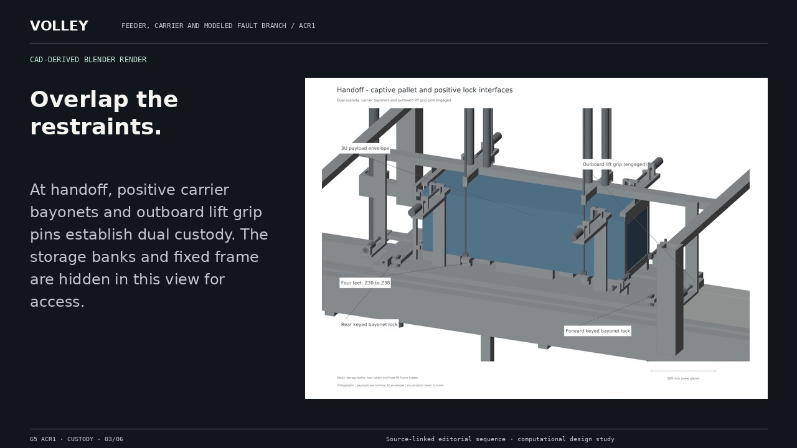
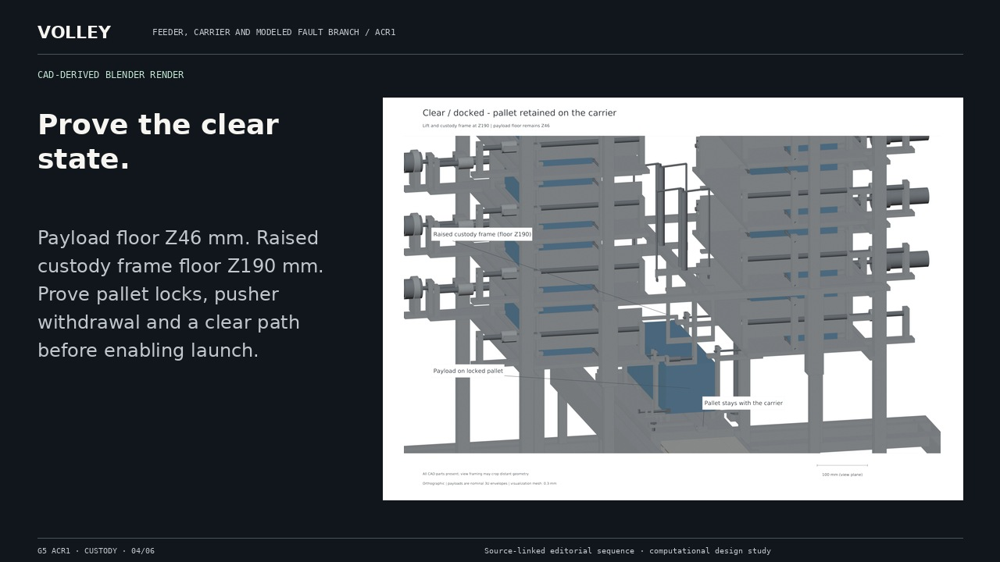
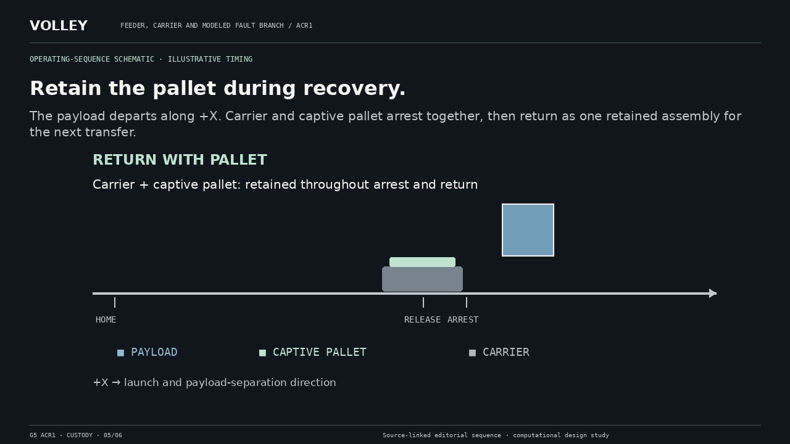
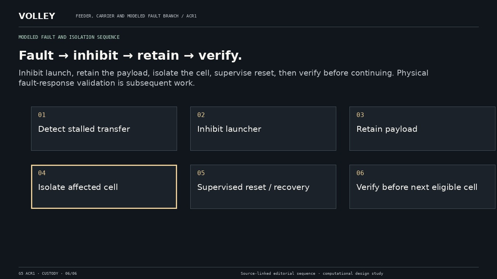

Continuous payload custody.
A complete still alternative to video. The original full-resolution scientific figures and CAD view provenance remain available in the asset register.
Return to film · Read complete transcript


Two fixed six-level banks hold twelve nominal 3U payloads. Select one cell and inhibit host burns during feeding.
CAD-derived Blender render

The guided pusher feeds the lift. At source level 5 the payload floor is Z830 mm; the lift grips hold its pallet.
CAD-derived Blender render

At handoff, positive carrier bayonets and outboard lift grip pins establish dual custody. The storage banks and fixed frame are hidden in this view for access.
CAD-derived Blender render

Payload floor Z46 mm. Raised custody frame floor Z190 mm. Prove pallet locks, pusher withdrawal and a clear path before enabling launch.
CAD-derived Blender render

The payload departs along +X. Carrier and captive pallet arrest together, then return as one retained assembly for the next transfer.
Operating-sequence schematic · illustrative timing

Inhibit launch, retain the payload, isolate the cell, supervise reset, then verify before continuing. Physical fault-response validation is subsequent work.
Modeled fault and isolation sequence